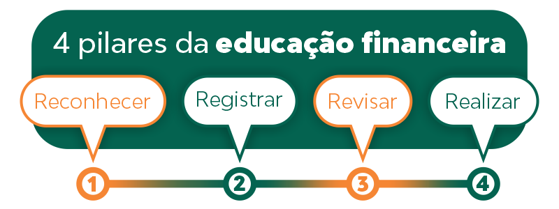

Oferecemos conteúdo financeiro educativo e acessível.
O que é educação financeira ?
Se você não entende muito bem esse conceito, a ENEF (Estratégias Nacional de Educação Financeira) define como um processo no qual os indivíduos melhoram a sua compreensão em relação ao dinheiro e produtos com informação, formação e orientação. “Nesse sentido, geram-se os valores e as competências necessários para se tornarem mais conscientes das oportunidades e riscos envolvidos. Para assim poderem fazer escolhas bem informadas”. Ou seja, com a educação financeira você aprende a analisar riscos, benefícios de uma compra e como ela pode impactar seu orçamento. Isso te ajuda nas tomadas de decisões, na hora de encarar um banco oferecendo um produto ou uma roupa em promoção. Com isso também é possível pensar no seu futuro e planejar para onde vai seu dinheiro. A administradora e consultora de finanças pessoais Laura Melaragno, define esse conceito como uma educação que a gente não tem, mas que é necessária desde criança para tornar as pessoas mais conscientes com relação, principalmente, ao valor do dinheiro. Por isso, a educação financeira na escola é um aspecto importante para moldar a personalidade dos consumidores do futuro. Vivemos em uma sociedade consumista, em que há uma grande oferta de produtos e serviços, facilidade de crédito e um apelo muito grande da mídia para o consumo. Por outro lado, nossos ganhos não são infinitos e precisamos saber como ganhar, como gastar e como guardar dinheiro.
Quais são os objetivos da educação financeira ?
O grande objetivo é empoderar as pessoas financeiramente. Isso porque gente que sabe gastar contribui para uma economia mais saudável. Por exemplo, o consumidor com noções básicas de educação financeira só compra o que pode pagar. Assim ele não contrai dívidas altas nem corre o risco de ficar inadimplente. Com baixos níveis de inadimplência no país, fica mais fácil obter crédito no sistema bancário. Então esse aporte pode ser usado para o pequeno produtor investir em novos negócios, gerando mais empregos e renda. Ou seja: a roda econômica gira e todos saem ganhando.
Como funciona a educação financeira ?
Para começar a tratar sobre a importância da educação financeira, precisamos considerar 3 conceitos, que são: ganhar, economizar e investir. Isso pode parecer bastante óbvio, mas nem sempre é algo que faz parte da vida das pessoas. Ao menos das que passam por dificuldades constantemente. O fato é que certamente as pessoas bem-sucedidas, em seu meio de atuação, sabem bem como funcionam esses conceitos e extraem deles seu melhor proveito. Essas pessoas dificilmente acumulam dívidas comprando o que está acima de suas possibilidades financeiras. Isso porque elas têm o controle necessário sobre sua renda, inclusive, sendo capazes de identificar com precisão cada gasto feito. E por que isso é importante? Porque quando alguém registra seus gastos, consegue acompanhar melhor as movimentações e assim trocar uma despesa desnecessária ou eliminá-la. Consequentemente, é possível repensar todo um conjunto de hábitos de consumo para gerar economia no fim do mês. Economizando, é possível investir. E quando a pessoa investe, ela age em função de sua prosperidade financeira. Com os gastos mapeados e controlados, é hora de investir! A prática de investir são as aplicações dos seus recursos em diferentes áreas, como ações, tesouro direto ou ativo financeiro. Com ele, você faz com que seu dinheiro trabalhe por você e gere ainda mais retorno no futuro.
Quais são os 4 pilares da educação financeira ?
A metodologia dos quatro pilares da educação financeira pode ser um bom caminho. São quatro Rs: reconhecer, registrar, revisar e realizar. Veja abaixo o que cada um deles representa na prática.
1. Reconhecer
O primeiro passo é entender como anda sua vida financeira. Nessa hora, vale se perguntar quais são suas necessidades e seus objetivos de vida. Isso porque, cedo ou tarde, seus projetos dependerão de dinheiro para acontecer. É nessa etapa que fazemos uma reflexão sobre as próprias finanças. Ou seja: definimos o que é mais importante e o que dá para mudar nos nossos hábitos. Para ilustrar, digamos que você queira viajar a outro país. Para isso, será necessário pagar as passagens, a hospedagem e a emissão do passaporte, entre outros itens. Se sua grana está curta, o jeito é cortar algumas despesas no dia a dia para economizar mais.
2. Registrar
A planilha financeira é uma ferramenta excelente para controlar os gastos. Nela, você deve incluir a sua receita (o dinheiro que entra todo mês) e as suas despesas (os pagamentos e as compras do período). Com esse mecanismo, fica mais fácil observar como funciona seu comportamento de consumo. Dá para ver exatamente quanto você gasta com aluguel, comida, vestuário e assim por diante. Com base nessas informações, é possível organizar um planejamento financeiro. Você pode se comprometer a reduzir gastos. Que tal substituir o plano de internet por um pacote mais barato? Ou escolher marcas mais em conta no supermercado?
3. Revisar
Aliás, essas práticas já fazem parte do terceiro pilar da educação financeira. Chegou o momento de corrigir os vícios para adotar hábitos de consumo mais saudáveis. O objetivo maior, aqui, consiste em gastar apenas aquilo que você pode pagar. Portanto, comprometa-se a fazer pesquisa de preços e comprar sempre à vista. Se tiver que usar o cartão de crédito, tome cuidado para não contrair uma dívida muito alta. Outra dica é estabelecer metas de poupança. Por exemplo, defina uma quantia fixa para guardar todo mês. Faça de conta que é um boleto, como a conta de água ou de luz, para não cair na tentação de torrar essa grana.
4. Realizar
Finalmente, quando você sabe onde está gastando e como usa o dinheiro, pode pôr seu planejamento financeiro em prática. Isso significa basicamente cumprir as metas estabelecidas. A ideia é gastar menos? Então corte as despesas possíveis para poupar sem sacrifícios. Acha melhor investir? Pois comece a alocar seus recursos em aplicações rentáveis. Claro que a realização não vem de uma hora para outra. Em épocas de inflação alta, o orçamento familiar fica apertado mesmo, o que torna mais difícil equilibrar as contas. De qualquer modo, os quatro pilares da educação financeira existem para ensinar as pessoas a construírem uma relação mais saudável com o dinheiro. Não se trata de enriquecer rapidamente, mas, sim, de adotar bons hábitos para a vida inteira.
Video para ver antes de investir: